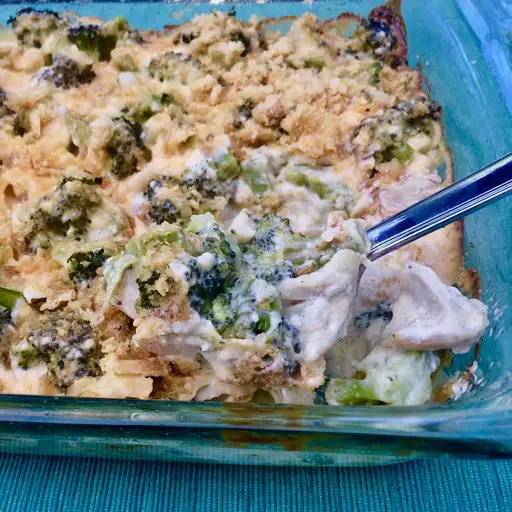

Keto Chicken and Broccoli Casserole

Description
This delicious casserole is great for keto diets that contains broccoli and chicken.
Ingredients
1 tablespoon extra virgin olive oil
2 ½ cups cooked chicken, cut into bite-sized pieces
3 cups chopped, cooked broccoli
¼ cup sliced almonds
4 tablespoons butter
1 cup heavy cream
½ (8 ounce) package cream cheese, cut into 1-inch cubes
4 ounces grated sharp Cheddar cheese
salt and ground black pepper to taste
¾ cup crushed pork rinds
Steps
- Preheat the oven to 350 degrees F (175 degrees C).
- Pour olive oil into a 9x13-inch baking dish and spread over the bottom and sides.
Arrange cooked chicken in a single layer in the dish. Distribute cooked broccoli evenly over the chicken and sprinkle with almonds.
- Melt butter in a saucepan over medium heat. Add cream; cook and stir for 1 to 2 minutes.
Stir in cream cheese until melted and smooth, 2 to 3 minutes. Add Cheddar cheese and stir until melted, 2 to 3 minutes. Season with salt and pepper.
Pour sauce over chicken, broccoli, and almonds; top with crushed pork rinds.